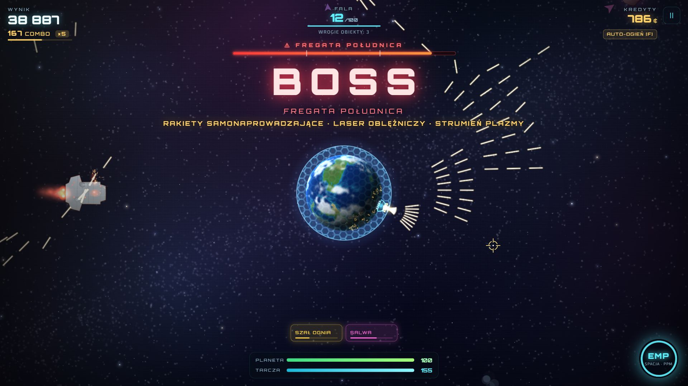
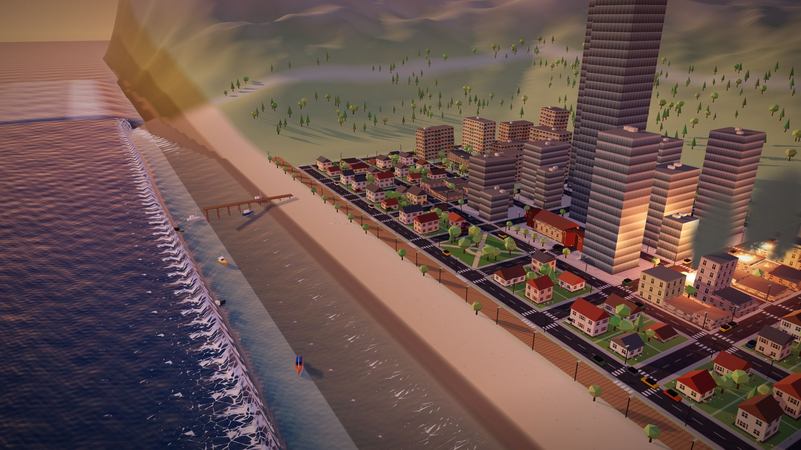
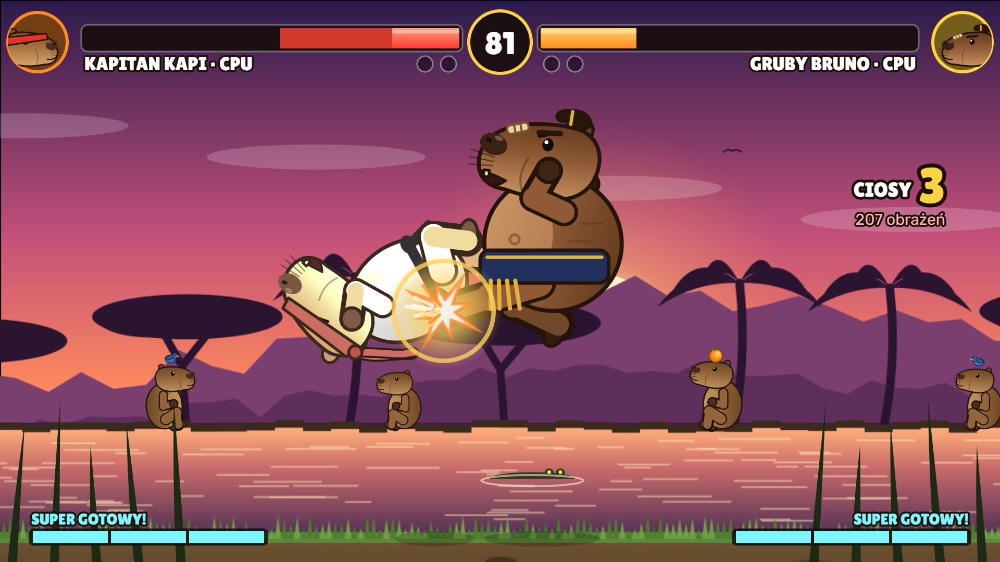
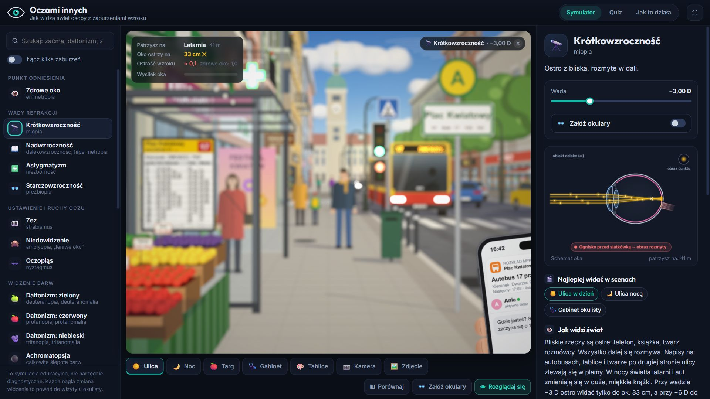
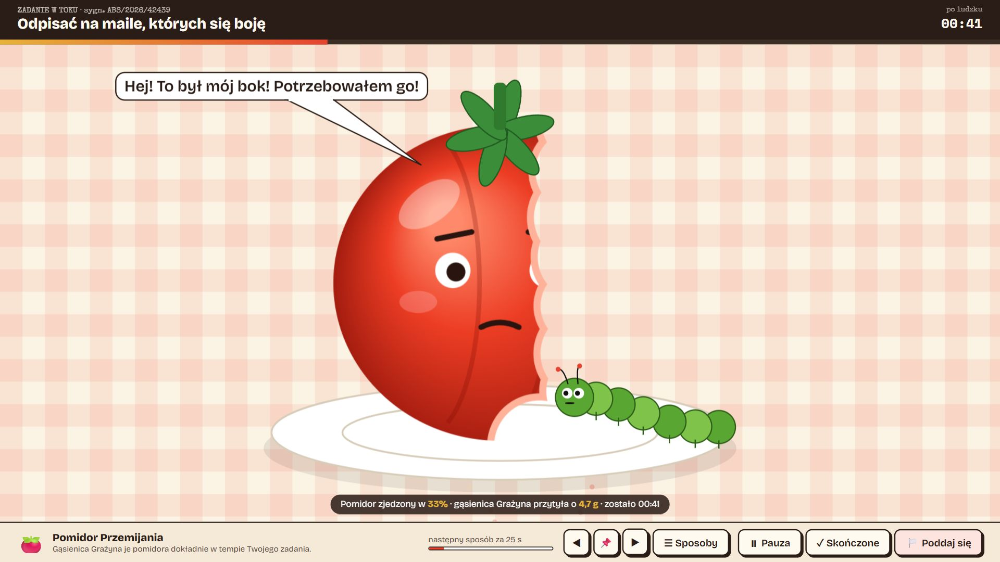

Tarcza Ziemi
Z każdej strony nadlatują meteoryty, a ty bronisz Ziemi działem orbitalnym, tarczą energetyczną, impulsem EMP i satelitami. Między falami ulepszasz obronę w sklepie.
Co doszło po eksperymencie
- Kampania na 100 fal, a każda kończy się innym statkiem-bossem z własnymi zdolnościami
- Statki wroga: bombowce, kamikadze, kanonierki, łowcy, stawiacze min i nosiciele rojów
- Kontenery z bronią: lanca laserowa, rakiety samonaprowadzające, działo łukowe
- Protokoły obrony, wydarzenia fal i trzy poziomy trudności

Sejsmo·Lab
Nadmorskie miasto stoi na uskoku. Ustawiasz siłę trzęsienia od M 1 do 9,9 i patrzysz w 3D, co dzieje się z budynkami, ulicami, drzewami, samochodami i wybrzeżem.
Co doszło po eksperymencie
- Tsunami liczone jak prawdziwa woda: płynie ulicami, omija budynki i spływa z powrotem do morza
- Morze najpierw się cofa, a potem przychodzi seria fal
- Nurt niesie łodzie, auta, drzewa i gruz; drewniane domy rozpadają się na deski
- Falochron do 15 m, kamera „Fala” i magnitudy do 9,9 jako scenariusz hipotetyczny

Kapibara Kombat
Bijatyka w stylu Street Fightera i Mortal Kombat, w której walczą kapibary. Dwóch graczy gra na jednej klawiaturze, a każda kapibara ma ponad 20 ruchów.
Co jest w środku
- Cztery kapibary, każda z innym stylem: karateka, właścicielka onsenu, ninja i sumita
- Ciosy specjalne, combosy w łańcuchach i w powietrzu, super ciosy i Kapibality
- Walka z komputerem na czterech poziomach i tryb treningu z podglądem hitboxów

Oczami innych
Symulator zaburzeń wzroku. Pokazuje, jak widzą świat osoby z krótkowzrocznością, astygmatyzmem, zezem, daltonizmem, zaćmą, jaskrą i AMD, i tłumaczy, skąd się to bierze.
Co jest w środku
- Ponad 20 zaburzeń, które można też łączyć, np. starczowzroczność z zaćmą
- Rozmycie liczone z optyki oka: krótkowidz widzi ostro telefon w dłoni, a autobus już nie
- Porównanie ze zdrowym okiem, okulary i leczenie, quiz, własna kamera albo zdjęcie

Absurdoro
Timer pomodoro z Ministerstwa Czasu Nadmiernie Mierzonego. Najpierw składasz wniosek o przydział czasu, a potem zadanie odlicza się na 12 absurdalnych sposobów.
Co jest w środku
- Gąsienica Grażyna zjada pomidora, kot zrzuca rzeczy ze stołu, ślimak ściga się z leniwcem
- Zegar Dalego topi się z każdą minutą, a foton leci przez Układ Słoneczny
- Na koniec raport z faktami, w które trudno uwierzyć